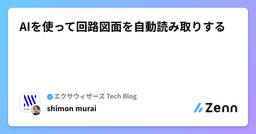
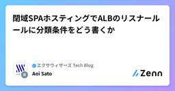
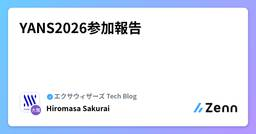

エクサウィザーズ Tech Blogのフィード
https://zenn.dev/p/exwzd
株式会社エクサウィザーズのテックブログ
フィード

AIを使って回路図面を自動読み取りする 1
1
エクサウィザーズ Tech Blogのフィード
こんにちは、株式会社エクサウィザーズのWANDチームでインターンをしている村井です。エクサウィザーズでは、AIやコンピュータビジョン技術、GraphRAGなどの情報検索技術を用いて、産業現場のデータを解析する研究開発を行っています。過去の関連記事には、GraphRAGを用いた図面解析の検証などがあります。AIを用いた回路図面の認識・解析は最近注目を集めているテーマです。回路の図面のみがある状態で、それをAI・コンピュータビジョン技術で解析して、記号や接続関係を認識したり、そこから情報検索、回路設計、最適化までをAIにさせるような論文が発表されています。今回はそうした手法の最新研究につ...
6日前

閉域SPAホスティングでALBのリスナールールに分類条件をどう書くか
エクサウィザーズ Tech Blogのフィード
本記事の目標先端技術開発グループ（WAND）の佐藤碧です。Cloud Enablingギルド[1]のリードをしており、そのギルド活動の一環として社員が自由にアプリケーションをデプロイできる「AWSデモ環境」をホストしています。現在、社内VPN経由のみでアクセス可能なinternal ALBの配下にデモアプリをデプロイする仕組みになっています。この仕組みではSPAを安全にホストする標準手段を用意しにくく、閉域でのSPAホスティング方式をいくつか考えて比較検証しました。 背景以降の考察は、デモ環境に固有の次の4つの条件を前提とします。 VPNからアクセスできるinternal...
7日前

YANS2026参加報告
エクサウィザーズ Tech Blogのフィード
はじめにこんにちは。株式会社エクサウィザーズの櫻井です。2026年8月16日から18日にかけて、NLPの若手研究者が集まるシンポジウムの第21回言語処理若手シンポジウム（YANS2026）が開催されました。当社もゴールドスポンサーとして参加し、発表も行いました。本記事では、発表内容の紹介や、開催期間中の様子について記載します。 YANS 2026についてYANSは、自然言語処理に関する若手研究者や、技術者の相互交流を目的とし、懇親会やポスター発表を行う研究シンポジウムです。今年のテーマは「若手のその先へ」であり、参加者が様々な領域の研究者・技術者・企業などと交流すること...
7日前

Dogwood を Amazon Bedrock AgentCore で動かす
エクサウィザーズ Tech Blogのフィード
先端技術開発グループ（WAND）の伊賀です。前回の記事では、AWS のポリシー言語 Dogwood の参照実装をローカルで動かし、「機密ドキュメントを読んだ後はメール送信を禁止する」というガードレールの判定が、同じリクエストでもイベント履歴だけで変わる様子を replay コマンドで確認しました。そのとき結びに書いた AgentCore Gateway で temporal policy を設定して試すことを今回実施します。前回と同じポリシーを Amazon Bedrock AgentCore のポリシー機能（Policy in AgentCore）として AgentCore Ga...
12日前
Amazon Bedrock の Web Search を英語と日本語で試す
エクサウィザーズ Tech Blogのフィード
先端技術開発グループ（WAND）の伊賀です。2026年8月、Amazon Bedrock に Web Search が追加されました（Introducing Web Search on Amazon Bedrock for foundation model grounding）。推論リクエストにパラメータを 1 つ追加するだけで、モデルが Web 検索で回答を裏付けてくれる（グラウンディングする）ようになる、という機能です。発表を読んで気になったのは、検索基盤が Amazon の自前運用で、クエリの組み立てからページの取得までがAWS内で完結するという点でした。モデルがどんなクエ...
15日前
AWS の新ポリシー言語 Dogwood を試す
エクサウィザーズ Tech Blogのフィード
先端技術開発グループ（WAND）の伊賀です。2026年8月、AWS が Dogwood というオープンソースのポリシー言語を発表しました（Introducing Dogwood: runtime verification for AI agents）。AI エージェントのツール呼び出しを制御するための言語で、同日に発表された Amazon Bedrock AgentCore の temporal policies の基盤にもなっています（Securing AI agents with temporal policies in Amazon Bedrock AgentCore）。エー...
15日前
新卒研修でAWS Jamを開催しました
エクサウィザーズ Tech Blogのフィード
本記事の目標先端技術開発グループ（WAND）の佐藤碧です。2026年度の新卒研修で、AWS Jamを行いました。どのような目的で行い、Jamを行った結果どのような効果があったかについて報告します。実際にJamを開催するにあたっての工夫についても解説するので、今後Jamを開催する方の参考になれば幸いです。新卒研修でJamを行った様子の中間報告として小島啓明が品川会にて登壇を行っています。資料がSpeakerDeckにて掲載されているので興味がある方はぜひご覧ください。 AWS JamとはAWS Jamとは、AWSが用意した具体的なシナリオに沿って課題を解決していく実践型の学習...
20日前
日本語音声の訛りを、参照音声との比較で計測する
エクサウィザーズ Tech Blogのフィード
はじめにこんにちは。株式会社エクサウィザーズの櫻井です。この記事では、日本語音声の訛りを客観的に評価する手法 を試してみた結果を共有します。多言語音声合成モデルが合成する日本語は、他言語の音声データで訓練された影響を受けていることが多いです。そのため、抑揚が不自然だったり、伸ばす音（長音）や詰まる音（促音）に違和感があるような、日本語以外の言語由来の「訛り」がある傾向があります。この「訛り」を客観的に評価できれば、音声合成モデルの品質管理や比較に使えるはずです。ところが、いざ測ろうとすると手頃な道具が見当たりません。合成音声の訛りは、実際に人間の聞き手に聞き比べてもらう主観評...
1ヶ月前
AWS Summit Japan 2026 参加報告 〜AWS 各種プログラム選出のご報告もあわせて〜
エクサウィザーズ Tech Blogのフィード
こんにちは！2026年6月25日、26日に開催された AWS Summit Japan 2026 に、エクサウィザーズのメンバーで参加してきました。ちょうどこの Summit の前後で、エクサウィザーズから延べ16名のメンバーが AWS Top Engineers、AWS Jr. Champions、All AWS Certifications Engineers、AWS Community Builders の各プログラムに選出される、といううれしいニュースが重なりました。日々の業務での技術検証や資格取得、技術ブログの執筆といった積み重ねを評価いただいたものです。本記事では、まず選...
1ヶ月前
SSII2026参加報告
エクサウィザーズ Tech Blogのフィード
こんにちは！株式会社エクサウィザーズ CTO 室の堺です。2026年6月10日（水）〜12日（金）の3日間、画像センシング技術に関する国内有数のシンポジウム「第32回 画像センシングシンポジウム（SSII2026）」が、パシフィコ横浜 アネックスホールで開催されました。本記事では、現地参加して感じた会場の雰囲気や、当社の活動、聴講したセッションの内容について紹介いたします。 SSII2026とはSSII（Symposium on Sensing via Image Information）は、画像センシング技術を軸として、機械学習・パターン認識・人工知能（AI）などの分野に携...
2ヶ月前
AWS Summit Japan 2026現地報告：AIエージェントの成熟とPhysical AIの萌芽
エクサウィザーズ Tech Blogのフィード
先端技術開発グループ（WAND）の小島です。2026年6月に幕張メッセで開催されたAWS Summit JapanにWANDのメンバーで参加してきたので、Builders' Fairを中心に現地参加報告を書いていきます。 AWS Builders' Fair昨年は、現地のデモ展示などを行っている「Builders' Fair」を中心にレポートしましたが、Summitはこのエリアが楽しいので、今年も同様に見てきました。このエリアは、「開発者の心をくすぐる」をテーマに、AWSの方が作ったデモアプリを展示しており、その場で自由に質疑応答できます。レベルが高く、そのまま使えそうなものも...
2ヶ月前
Google Cloud Next 2026の振り返り
エクサウィザーズ Tech Blogのフィード
はじめに2026年4月22日から4月24日にかけて、ラスベガスで開催された Google Cloud Next 2026に参加しました。本記事では特に印象に残った 3つのセッション に絞って、技術的な内容と所感をまとめます。 1. Workshop: Build a PDF Parsing Agent with Gemma and NVIDIA Nemotron on Vertex最初に取り上げるのは、ADK（Agent Development Kit） を用いてマルチエージェントの PDF パース用アプリケーションを構築し、Agent Platform (Vertex ...
2ヶ月前
自己修正パイプラインは本当に割に合うのか？ナレッジグラフQAの6システムを比較する
エクサウィザーズ Tech Blogのフィード
1. はじめにはじめまして！AI Service Factory OfficeでMLエンジニアをしているナターシャと申します。普段はエージェント開発やレコメンド・検索システム、そして最近はLLM向けのナレッジグラフを中心に取り組んでいます。本記事では、最近実施した比較検証の結果と、その過程で個人的に驚いた点をいくつか共有したいと思います。ここで、ある手の込んだ質問応答システムを思い浮かべてみてください。自然言語の質問を受け取り、それを形式的なデータベースクエリに変換し、ナレッジグラフに対して実行し、そして決定的に重要なこととして、自分の回答を自己チェックし、何かおかしいと感じたら...
2ヶ月前
JSAI2026参加報告
エクサウィザーズ Tech Blogのフィード
はじめにこんにちは、株式会社エクサウィザーズ WAND の隅田です。2026年6月8日〜12日にかけて、群馬県高崎市のGメッセ群馬およびオンラインにて、JSAI2026（2026年度 人工知能学会全国大会・第40回）が開催されました。JSAIは、「誰もが AI 研究の最前線にアクセスできる」を理念とした、人工知能についての国内最大級の学会です。2026年は人工知能学会全国大会の第40回にあたり、大会期間中には40周年記念イベントおよび式典も実施されました。大会終了後の公式発表では、参加者数は5,278名（現地4,296名、遠隔982名）でした。当社は今年、ゴールドスポンサーと...
2ヶ月前
OpenClaw+AWSで情報収集botを作る方法と、そのリスク
エクサウィザーズ Tech Blogのフィード
こんにちは、株式会社エクサウィザーズのWANDチームでインターンをしている村井です。WANDチームでは、クラウドインフラとAIエージェントについての技術検証と開発を行っています。今回はその一環で、OpenClawとAmazon Bedrockなどを使って、関連分野の学会の開催情報をTeamsに自動で投稿してくれるエージェントを作りました。技術的な話に加えて、作る過程で分かったOpenClawのリスクについて扱います。 背景WANDチームは活動の一環として、各種テックイベントや学会にスポンサー・発表者として参加し、情報共有とアウトリーチを行っています。最近の例として、言語処理学会 ...
3ヶ月前
オッカムの剃刀で作るAIソリューションアーキテクト
エクサウィザーズ Tech Blogのフィード
先端技術開発グループ（WAND）の小島です。前回の記事で、AWSが2026年5月に発表した「Agent Toolkit for AWS」を試してみました。今回はこれを使って、Claude CodeでAWSのアーキテクチャ図（draw.io形式）を作成する方法を紹介します。https://zenn.dev/exwzd/articles/20260601_agent_toolkit_aws_1ただ単に作らせるだけだと、要素を盛りすぎた「何をしたいのかわからない図」になりがちです。そこで本記事では、Claude Codeのスキル（Skills）に「オッカムの剃刀」（引き算的思考）と「不明点...
3ヶ月前
Agent Toolkit for AWSを試す
エクサウィザーズ Tech Blogのフィード
先端技術開発グループ（WAND）の小島です。AWSが2026年5月に発表した「Agent Toolkit for AWS」を試してみました。コーディングエージェントからAWSのドキュメント検索やリソース操作までを一手に担うツールキットですが、実際に触ってみると、便利な点と過渡期ゆえのハマりどころの両方が見えてきました。本記事では、具体的なユースケースを通じてその実像を紹介します。 Agent Toolkit for AWSとはAgent Toolkit for AWSは、コーディングエージェントに対して、AWSサービスを操作するためのツール・知識・ガードレールを提供するものです。具...
3ヶ月前
【Microsoft Agent Hackathon 】手順書と実ログを点検する自律エージェント「Watchdog Agent」
エクサウィザーズ Tech Blogのフィード
暗黙知の形式知化を支援する自律駆動型のAIエージェントを作りたいこんにちは、先端技術開発グループ（WAND）の加藤です。私は先端技術開発グループに所属しながら、シニアエンジニアの立場で様々なプロジェクトに参画することが多く、特に案件相談やAI開発プロジェクト初期の要件定義に携わることがよくあります。最近では、AIエージェント構築のプロジェクトが増え、金融・エネルギーなど長くお付き合いがある領域に加えて、製造業の皆様とお話する機会も非常に多くなってきました。そんな中で、特に製造業のお客様からお問い合わせいただくのが、いわゆる「暗黙知の形式知化」です。日本の多くの製造業では...
3ヶ月前
FastMCP OAuth Proxy × Amazon CognitoによるMCP認証・認可
エクサウィザーズ Tech Blogのフィード
先端技術開発グループ（WAND）の伊賀です。2026年3月23日に開催された JAWS-UG AI/ML #36：Generative AI/ML LT大会 にて、FastMCP OAuth Proxy with Cognito というタイトルで登壇しました。FastMCP OAuth Proxy と Amazon Cognito を組み合わせ、MCP サーバーの認証・認可をどう成立させるか、というテーマです。LT では全体像をお伝えすることを優先したため、DCR や CIMD、FastMCP OAuth Proxy については概要の説明にとどめました。本記事では、その部分の理解を深...
3ヶ月前
gh skill と Copilot Coding Agent で Agent Skills を自動推薦する仕組みを作ってみた
エクサウィザーズ Tech Blogのフィード
はじめにこんにちは、株式会社エクサウィザーズWANDの大西です。2026年4月16日、gh skill コマンドが GitHub CLI v2.90.0 で public preview としてリリースされました。gh skill install や gh skill search で、Agent Skills の検索・インストール・公開がコマンドラインから行えるようになり、対応エージェントも Copilot、Claude Code、Cursor、Codex、Gemini CLI と幅広いです。ただ、日に日に世にあふれる Skill や更新される Skill に対して「どのリポ...
4ヶ月前